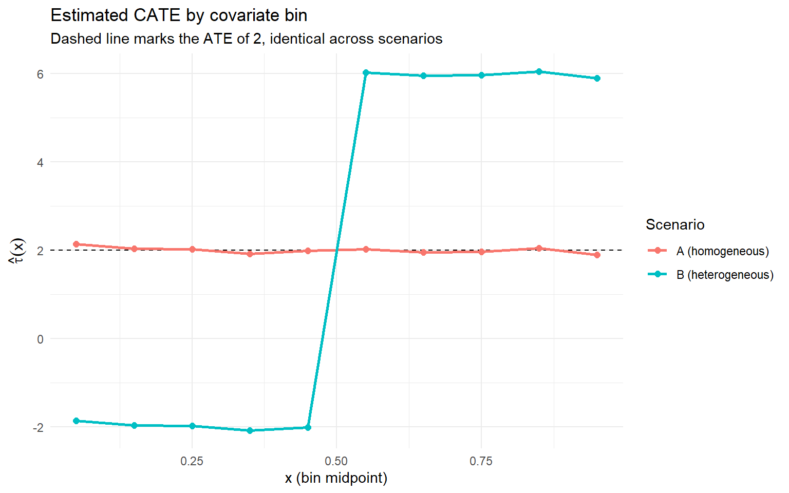
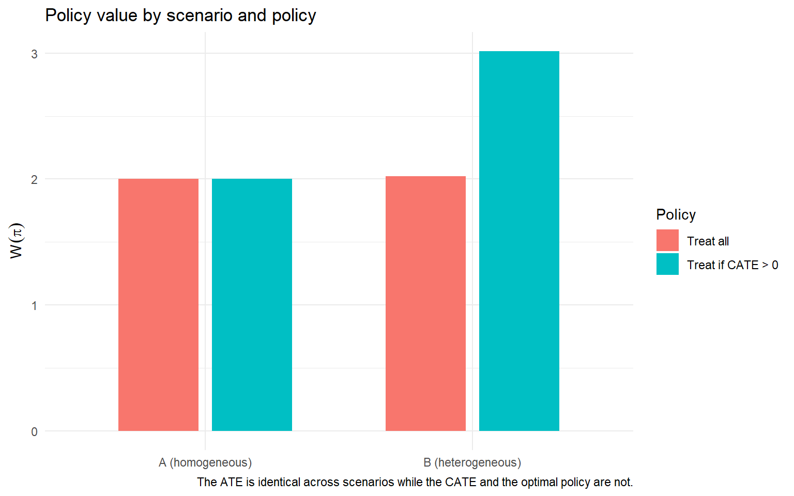

flowchart TB
L5["<b>Layer 5: Fairness and robustness</b><br/>Constrain the rule, check stability<br/>(Kim and Zubizarreta 2023)"]
L4["<b>Layer 4: Policy</b><br/>Convert heterogeneity into an assignment rule<br/>(Kitagawa and Tetenov 2018)"]
L3["<b>Layer 3: Inference</b><br/>Test that the heterogeneity is real<br/>The layer most analyses skip<br/>(Imai and Li 2024)"]
L2["<b>Layer 2: Discovery</b><br/>Estimate the CATE with a flexible method<br/>(Wager and Athey 2018)"]
L1["<b>Layer 1: Estimand</b><br/>State the decision, derive the estimand<br/>(the governing principle of Part V)"]
L1 --> L2
L2 --> L3
L3 --> L4
L4 --> L5
classDef standard fill:#eef5fb,stroke:#2C7FB8,color:#1f5f8b;
classDef infer fill:#fbe6e3,stroke:#D95F0E,color:#b23a2b;
class L1,L2,L4,L5 standard;
class L3 infer;
The Average Treatment Effect Is Often the Wrong Metric
causal inference
heterogeneous treatment effects
policy learning
experimentation
R
A practitioner’s walkthrough of why the average treatment effect is the default and wrong estimand for most decisions: what the ATE hides, the CATE for heterogeneity, the QTE for distributional effects, policy learning for assignment rules, a four-estimand decision map, a five-layer analysis architecture, an R simulation where two experiments with the same ATE demand opposite decisions, and a review checklist for choosing the estimand.
A team runs a randomised experiment or a well-identified observational study, estimates the average treatment effect, finds it positive and statistically significant, and reports that number as the result of the analysis. The decision then follows almost mechanically: the effect is positive, so deploy the intervention. The average treatment effect is the default estimand, and it is the wrong estimand for most of the decisions it is used to justify, because those decisions are not about the average.
This persists for a good reason. The ATE is what the standard toolkit reports, and a single number is easy to act on. But the single number can be consistent with wildly different underlying realities. In the 401(k) participation example built on the conditional average treatment-effect tools introduced in Stata 19 (StataCorp 2025a), the doubly robust average effect of eligibility on net financial assets is roughly $8,000. In the same worked example, the group-level effects across income quartiles run from about $2,919 at the bottom to about $17,279 at the top, a ratio of roughly 5.9 (Mendez 2026). The same $8,000 average is consistent with a homogeneous world where every household gains $8,000 and a heterogeneous world where half the population gains $16,000 and half gains nothing. The correct policy is opposite in the two worlds. In the first, treat everyone. In the second, treat only the half that benefits. The average cannot tell them apart. Firpo (2007), estimating quantile treatment effects for a job training program, found the effect concentrated in the upper quantiles of the earnings distribution and close to zero at the bottom, a pattern the mean effect entirely obscured.
This post treats the average treatment effect as an estimand and asks when it is the right one. Part I defines the ATE and the three things it hides. Part II develops the first: the ATE hides whom, and the conditional average treatment effect recovers it. Part III develops the second: the ATE hides where in the distribution the effect lives, and quantile treatment effects recover it. Part IV develops the third: the ATE answers the wrong question when the decision is an assignment rule, and policy learning recovers it. Part V places the four estimands side by side and states which decision each one answers. Part VI describes the architecture of a serious heterogeneity analysis. Part VII walks through a simulation in which two experiments with the same ATE demand opposite decisions. Part VIII is the review checklist I run before I accept an ATE as the answer to a decision. Full R implementation throughout. One caveat sets the scope: this post is not an argument that the ATE is never useful, and it is not a survey of every heterogeneous-treatment-effect estimator, since the ATE is the right estimand for a specific class of decisions and the aim here is to draw the line between that class and the far larger set it does not answer.
Part I. What the ATE is, and what it hides
I.1 The estimand, formally
Start with the potential-outcomes setup. For a unit \(i\) and a binary treatment, let \(Y_i(1)\) be the potential outcome under treatment and \(Y_i(0)\) the potential outcome under control. The unit-level treatment effect is the difference \(Y_i(1) - Y_i(0)\). The fundamental problem of causal inference, in the language of Holland (1986) and the framework of Rubin (1974) and Imbens and Rubin (2015), is that we never observe both potential outcomes for the same unit. A treated unit reveals \(Y_i(1)\) and hides \(Y_i(0)\), a control unit reveals the reverse, so the unit-level effect is never directly observed.
The average treatment effect resolves the problem by moving from the unit to the population.
\[ \tau_{\text{ATE}} = E\!\left[Y_i(1) - Y_i(0)\right] \]
The average treatment effect is the expected difference between the two potential outcomes, averaged over the whole population. It is the quantity a randomised experiment identifies cleanly, because randomisation makes the treated and control groups comparable in expectation, so the difference in observed means is an unbiased estimate of the ATE. This is why the ATE is the default. It is the estimand the cleanest identification strategy delivers most directly, and the rest of the toolkit is built to report it.
The ATE is an average over units, and that fixes both what it does well and what it cannot do. It integrates out every dimension of heterogeneity: who the unit is, where its outcome falls in the distribution, and what the unit-level effect actually was. That integration is the source of its statistical convenience and, at the same time, the source of its decision-relevant blindness. The rest of Part I makes the blindness precise.
NoteEven the ATE is not always identified
Before worrying about what the ATE hides, it is worth remembering that the ATE itself is only point-identified under assumptions. Manski (1990) showed that without those assumptions the ATE is identified only within nonparametric bounds, often wide enough to include zero. The critique of this post applies even in the favourable case where the ATE is cleanly identified, so the identification problem is a separate and prior concern that this post sets aside.
I.2 The implicit assumption
Reporting the ATE as the answer to a decision smuggles in an assumption: that the average is a sufficient statistic for the decision. The assumption holds in exactly one case. When the treatment effect is homogeneous, every unit has the same effect, and the average describes every unit exactly. Under homogeneity the ATE is not a summary that loses information. It is the whole story, and treating everyone the same way is optimal because everyone is the same.
The assumption fails whenever the effect is heterogeneous, which is the empirical norm rather than the exception. When some units benefit and others are harmed, the average is a net figure that describes no actual unit. A positive ATE under heterogeneity means the benefited units outweighed the harmed units on net. It says nothing about how many units were harmed, by how much, or who they were. The decision-maker who reads a positive average as “the intervention works” has silently assumed homogeneity, usually without noticing the assumption was made.
In my work I treat homogeneity as a claim that has to be argued, not assumed. The default should run the other way. Effects are heterogeneous until shown otherwise, because almost every intervention on almost every population produces different effects for different units, and the burden of proof sits on the claim that a single average describes everyone. An analysis that reports the ATE without testing for heterogeneity has quietly assumed the answer to the question that usually matters most.
I.3 The three things the ATE hides
Three distinct things disappear into the average, and they structure the rest of the post.
First, the ATE hides whom. Two populations with the same average can differ entirely in which units benefit and which are harmed. A positive average is compatible with a large treated minority made worse off, as long as a larger group gains enough to cover them. The conditional average treatment effect, the effect conditional on the unit’s observable characteristics, recovers this dimension, and Part II develops it.
Second, the ATE hides where in the distribution the effect lives. An average effect of zero can hide an intervention that raised the top of the outcome distribution and lowered the bottom in equal measure, and an average that is positive can still mask a decline at the tail a regulator cares about. The quantile treatment effect, the effect at each point of the outcome distribution, recovers this dimension, and Part III develops it.
Third, the ATE hides the policy question. When the decision is not “treat everyone or no one” but “whom should I treat given a budget”, the relevant object is an assignment rule, not an average effect. A rule scores units and treats the ones expected to gain most, and its value is not read off any population mean. Policy learning recovers this dimension, and Part IV develops it.
The connection to the rest of the series needs one careful distinction. The Cannibalization post made a related argument about a different object. There the average hid a displacement across scopes, the gap between the local metric on the intervention surface and the total metric across all affected surfaces, so a real local gain coexisted with a loss recorded elsewhere. Here the average hides heterogeneity within a single scope, the gap between units or quantiles whose effects have opposite signs on the same metric. Both are instances of the general lesson that the estimand comes first, developed in the Forecasting post, but the mechanisms are distinct and a serious analyst has to recognise which one is operating before reaching for a fix.
The ATE is the average of a distribution of unit-level effects, and averaging is exactly the operation that discards the information a targeted decision needs. The first dimension it discards is who benefits and who is harmed. Part II develops the conditional average treatment effect, the estimand that recovers the who, the methods that estimate it, and the discipline required to tell real heterogeneity apart from the artefacts of subgroup fishing.
Part II. The ATE hides who: heterogeneity and the CATE
Part I established that the ATE hides whom the treatment helps and whom it harms. The average is a sufficient statistic for the decision only when the effect is the same for everyone, and it almost never is. The estimand that recovers the who is the conditional average treatment effect, the treatment effect conditional on the unit’s observable characteristics. Estimating it is close to a solved problem, because modern machine learning provides a mature toolkit that partitions the covariate space and reports a different effect in each region. That part is easy now.
The harder task is validation. Knowing that the heterogeneity the toolkit reports is real, rather than an artefact of overfitting or a lucky slice of the data, is the work that most analyses skip. This section does four things in order. We define the CATE, we survey the methods that estimate it, we develop the inference that validates it, and we warn against the subgroup fishing that fakes it.
II.1 The conditional average treatment effect
We keep the notation from Part I. Unit \(i\) has potential outcomes \(Y_i(1)\) and \(Y_i(0)\), and a vector of observable covariates \(X_i\). The ATE averaged the unit-level effect \(Y_i(1) - Y_i(0)\) over the whole population. The conditional average treatment effect averages it only over units that share a covariate profile.
\[ \tau(x) = E\!\left[Y_i(1) - Y_i(0) \mid X_i = x\right] \]
Read this carefully, because the shift from Part I is the whole point. The CATE is a function of \(x\), not a single number. It reports, for every covariate profile, the average effect among units carrying that profile. The ATE is the average of \(\tau(x)\) over the covariate distribution, which means the ATE is a summary of the CATE and the CATE is the richer object. When \(\tau(x)\) is flat, constant across \(x\), the effect is homogeneous and the ATE describes everyone. When \(\tau(x)\) varies, the effect is heterogeneous and the ATE describes no one in particular, in the same way the Elasticity post showed that a single pooled elasticity describes no real segment when demand response differs across customers.
This is the object a targeting decision actually needs. A decision about whom to treat is a decision about which covariate profiles to treat, and \(\tau(x)\) is exactly the map from profile to expected effect. If it is positive for some profiles and negative for others, the correct policy is to treat the profiles with positive CATE and withhold from the rest. The ATE cannot support that policy, because it has already integrated the profiles away and returned their weighted average. You cannot recover the parts once you have been handed only the mean.
The gap between the two estimands widens as the covariate distribution grows more dispersed. When profiles are similar, the CATE and the ATE nearly coincide and the extra machinery buys little. When profiles differ sharply, and a positive average conceals a group that is actively harmed, acting on the ATE treats the harmed group by mistake and pays for the privilege. The size of that mistake is the value of estimating \(\tau(x)\) in the first place, and it is why the rest of Part II is about getting the estimate right and then proving it is right.
II.2 Estimating the CATE
The first modern approach adapts the regression tree. Athey and Imbens (2016) modified recursive partitioning to estimate heterogeneous causal effects, splitting the covariate space into regions that differ in their treatment effect rather than in their outcome level. Their central contribution is what they call honesty. One subsample chooses the partition and a separate subsample estimates the effect inside each region. Reusing the same data for both would let the tree carve out regions that look heterogeneous purely because it searched for them, and the honest split removes that bias, which is what allows valid confidence intervals even when the covariate set is large.
Wager and Athey (2018) extended the honest tree into an ensemble, the causal forest, which averages many honest trees to estimate \(\tau(x)\) at any target point. Their result is that the forest estimator is pointwise consistent and has an asymptotically Gaussian and centred sampling distribution, so valid confidence intervals can be built around the pointwise CATE. Athey and Wager (2019) then took the method to an application and showed how the forest surfaces the specific covariate profiles that drive the variation, turning a black-box prediction into an interpretable statement about which units respond.
A parallel line repurposes any supervised learner. Künzel, Sekhon, Bickel and Yu (2019) formalised the meta-learners. The S-learner fits a single model with treatment included as a feature and reads the effect off the treatment coefficient surface. The T-learner fits two separate models, one for the treated and one for the control, and takes their difference. The X-learner improves on the T-learner when the treated and control groups are unbalanced in size, by estimating imputed unit-level effects and then modelling those, so the more plentiful group informs the estimate for the sparse one. StataCorp (2025b) brought S-, T-, and X-learners into mainstream practice with a production implementation. The choice among them is not a matter of taste. It depends on the sample balance and on the structure of the heterogeneity you expect.
II.3 Validating the heterogeneity
Here is the failure that quietly ruins most applied work. A causal forest will always report a distribution of CATE estimates that varies across units, even when the true effect is identical for everyone, because estimation noise alone produces apparent variation in the fitted values. The relevant question is never whether the estimated \(\tau(x)\) varies. It always does. The question is whether the true \(\tau(x)\) varies. Telling real heterogeneity apart from estimation noise is the validation problem, and skipping it is exactly how an analysis talks itself into heterogeneity that was never in the data.
Imai and Li (2024) provide the machinery that answers the question. They develop statistical inference for heterogeneous effects discovered by generic machine learning, working inside Neyman’s repeated-sampling framework and relying only on the randomisation of treatment and the random sampling of units. The inference does not depend on any property of the learning algorithm, which is what makes it usable no matter which estimator produced the CATE. Their procedure sorts units into groups by their estimated CATE, estimates a valid average effect within each group with a valid confidence interval, tests treatment-effect homogeneity across the groups, and tests the rank-consistency of the within-group effects. Those tests speak to the claim directly. Is the ordering the machine learning discovered real, and are the group effects genuinely different from one another.
The practical payoff of the Imai and Li (2024) design is that it separates two jobs that applied teams routinely confuse. The learning algorithm does the discovery, proposing an ordering of units by predicted effect. The randomisation-based inference does the confirmation, asking whether that proposed ordering holds up when the effects are re-estimated with valid within-group averages. Because the confirmation leans only on the experimental design and not on the fitted model, it stays honest even when the model overfits, which flexible learners on finite samples reliably do.
Komura, Bargagli-Stoffi, Arah and Inoue (2026) give a practical guide to estimating and discovering heterogeneous effects with machine learning in observational studies, walking the full workflow from estimation through validation and flagging the extra assumptions the observational setting demands. In my own work the sequence is fixed and not negotiable. Estimate the CATE with a flexible method, then validate the heterogeneity with a randomisation-based test before drawing a single targeting conclusion. An estimated CATE distribution without a homogeneity test is a hypothesis, not a finding, and I treat it as one.
II.4 The subgroup-fishing warning
The oldest way to manufacture heterogeneity predates every forest. Slice the data by a covariate, hunt for a subgroup with a significant effect, and report it as if the analysis had set out to find it. Wang, Piantadosi, Le-Rademacher and Mandrekar (2021), writing on statistical considerations for subgroup analyses, catalogue the standard hazards. Testing many subgroups inflates the false-positive rate, so something will look significant by chance. Data-driven cutoffs on continuous covariates capitalise on noise, choosing the threshold that happens to maximise the apparent effect. Post-hoc subgroups discovered after seeing the outcomes carry no valid inferential interpretation at all. A subgroup effect found by searching is a hypothesis for a future study, and calling it a result does not make it one.
The line between a causal forest and subgroup fishing is not the flexibility of the method, because the forest is far more flexible and searches a far larger space of partitions. The line is the validation. A causal forest whose heterogeneity survives an Imai-Li homogeneity test on held-out randomisation is signal you can act on. A subgroup discovered by slicing and reported without any correction for the search is an artefact dressed as a finding. Flexible machine learning does not rescue an analysis from the multiplicity problem. It enlarges the search space and therefore enlarges the problem. Only pre-registration or a valid randomisation-based test earns the right to call the pattern real.
WarningA causal forest always finds heterogeneity
A flexible CATE estimator reports a varying effect distribution across units even when the true effect is homogeneous, because estimation noise alone generates the appearance of variation. Imai and Li (2024) supply the randomisation-based test that separates real heterogeneity from estimation noise. An estimated CATE distribution without such a test is a hypothesis, not a finding.
The CATE recovers who benefits and who is harmed, and the validation machinery tells us whether that pattern is real or an accident of the fit. But the CATE still describes the effect at the mean of each subgroup’s outcome. It says nothing about what happens across the outcome distribution inside a subgroup. An intervention can leave the average of every profile unchanged while compressing the distribution for some and stretching it for others, moving mass at the tails without moving any mean. Part III develops the quantile treatment effect, the estimand that recovers where in the distribution the effect actually lives.
Part III. The ATE hides where: quantile and distributional effects
Part II recovered the who. It showed that the effect varies across units with different covariates and that the CATE, \(\tau(x)\), measures that variation. But the CATE is still a mean. It reports the average effect within each subgroup, and an average within a subgroup can conceal exactly what an average over the whole population conceals. A treatment can raise the top of the outcome distribution inside a subgroup, lower the bottom of it, and leave the subgroup mean untouched. The CATE would read as flat. The reshaping would be invisible.
Part III recovers that second dimension, the shape of the effect across the outcome distribution itself. We define the quantile treatment effect and separate it cleanly from the CATE, give the intuition for why shape carries decision weight, cover identification under endogeneity and in difference-in-differences designs, and give the R implementation.
III.1 The quantile treatment effect, and how it differs from the CATE
The quantile treatment effect compares the distribution of the outcome under treatment with the distribution of the outcome under control, evaluated at a given quantile. Where the ATE compares the means of the two potential-outcome distributions, the QTE compares them point by point along the distribution. To avoid a symbol clash with the CATE’s \(\tau(x)\), we index the quantile level by \(u \in [0,1]\) and reserve \(\tau(x)\) for the CATE throughout the rest of the post. We write the QTE for a quantile level \(u \in (0,1)\) as the difference between the \(u\)-quantile of the treated-outcome distribution and the \(u\)-quantile of the control-outcome distribution.
\[ \text{QTE}(u) = Q_{Y(1)}(u) - Q_{Y(0)}(u) \]
Here \(u\) indexes the quantile level and runs from zero to one, so \(Q_{Y(1)}(u)\) and \(Q_{Y(0)}(u)\) are the quantile functions of the two potential-outcome distributions. This \(u\) is not the \(\tau(x)\) of Part II. There, \(\tau(x)\) indexed the conditional average effect by covariate profile. Here, \(u\) indexes a position in the outcome distribution. To keep the two apart in what follows, read \(u\) as the quantile level and \(\tau(x)\) with its argument as the CATE. The QTE at the median compares the median outcomes. The QTE at the ninetieth percentile compares the top of the two distributions. A QTE that varies with \(u\) tells you the treatment reshaped the distribution rather than shifting it as a block.
The distinction from the CATE is the point most practitioners blur, so we state it directly. The CATE is heterogeneity across units. It asks how the effect differs for units with different covariates \(X\). The QTE is heterogeneity across the outcome distribution. It asks how the effect differs at different points of the outcome \(Y\). The two are orthogonal. A treatment can carry a constant CATE, the same average effect for every covariate profile, and still carry a non-constant QTE, because within each profile it compresses or stretches the spread of outcomes. The QTE also carries a subtlety the CATE does not. The \(u\)-quantile of the treated distribution and the \(u\)-quantile of the control distribution need not belong to the same units, so the QTE is a statement about two distributions and not about the effect for the unit sitting at quantile \(u\). The difference in quantiles is not the quantile of the difference.
III.2 Why the shape matters
Many decisions turn on the shape of the outcome distribution and not on its mean. A policy that raises average income while widening inequality carries a different welfare reading from one that raises average income while compressing it, and the two can share an identical ATE. A pricing intervention that lifts average revenue by pushing high-spenders higher while driving low-spenders to churn has a different long-run value from one that raises revenue evenly across the base, and the ATE folds the two into the same number. When the decision has a distributional objective, equity, tail risk, a floor to protect, the ATE is not merely incomplete. It is silent on the one dimension the decision rests on. The Cannibalization and Dynamic Pricing posts in this series both turned on effects that lived in one part of the customer distribution and vanished in the aggregate.
Firpo (2007) supplies the canonical evidence. Estimating quantile treatment effects for a job-training program on the LaLonde and Dehejia-Wahba data, the analysis found the effect concentrated in the upper quantiles of the earnings distribution and close to flat at the lower quantiles. The mean effect compressed this into a single positive number, which a policymaker would read as the program helping participants on average. The QTE told a different story. The program helped participants who were already earning more and did little for those at the bottom, the reverse of what a program aimed at the disadvantaged is meant to do. The ATE and the QTE support opposite conclusions about whether the program worked, and only the QTE answers the question the program was designed around.
III.3 Identification under endogeneity
In observational settings the treatment is usually endogenous. It correlates with unobserved determinants of the outcome, so a naive comparison of quantiles across treated and control units fails to identify the QTE, in the same way that naive regression fails to identify the ATE. The Elasticity post developed this problem for means and showed how an instrument recovers the causal quantity. The quantile case adds a complication. The identification strategy has to hold at every quantile, not only at the mean, because the object of interest is the whole set of \(\{\text{QTE}(u) : u \in (0,1)\}\).
Chernozhukov and Hansen (2005) supply the instrumental-variables answer. Their model identifies the QTE under endogeneity without functional-form assumptions, through an instrument \(Z\) that shifts treatment but stays independent of potential outcomes. The structural restriction that makes this work is rank invariance, or its weaker form rank similarity, which limits how a unit’s rank in the outcome distribution can move across treatment states. Under rank invariance, a person who ranks high in earnings without training keeps that rank after training, so a common unobserved factor, read as ability or proneness, fixes the ranking across states. Rank similarity relaxes this to allow unsystematic slippage in rank around a common level, provided the slippages are identically distributed across treatment states conditional on the selection information. Under either restriction and a valid instrument, the QTE is identified through a set of conditional moment restrictions, and the model reads equivalently as a structural simultaneous-equations system with non-additive errors. Rank invariance is the price of identifying a distributional effect under endogeneity, and you defend it on domain grounds, the way you defend an exclusion restriction for the ATE.
III.4 QTE in quasi-experimental designs
Callaway and Li (2019) carry the quantile logic into difference-in-differences. They identify the quantile treatment effect on the treated, the QTT, under a distributional extension of the mean parallel-trends assumption used for the ATT. Identifying the QTT is harder than identifying the ATT, because it depends on an unknown dependence structure, the copula, linking the change in untreated potential outcomes to the initial outcome level. Their framework closes this gap with a copula-stability assumption, which holds that the dependence structure is stable over time and can be recovered from pre-treatment periods. They test it in practice by tracking Kendall’s tau across pre-treatment years and checking that it does not drift. Applied to state minimum-wage increases, the method shows the effect on county unemployment negative at the bottom of the distribution and positive through the middle and upper range, heterogeneity the ATT alone would have flattened.
Djuazon and Tsyawo (2026) extend distributional difference-in-differences to outcomes that the standard continuous-quantile methods cannot handle, outcomes that are discrete, mixed, or censored. They identify distribution and quantile treatment effects on the treated under distributional parallel-trends and no-anticipation assumptions, accommodate staggered adoption, and supply a test of over-identifying restrictions that serves as a diagnostic for the identifying assumptions. Their crime-count application reports the distributional effect precisely where the quantile effect is silent, which is the practical signature of a discrete outcome. Many real outcomes are not continuous. Counts, censored durations, and mixed continuous-discrete revenue all break the smooth-quantile machinery, and pushing continuous-QTE methods onto them is a specification error rather than an approximation.
Morozov (2026) gives a clear treatment of the definitions and distinctions among quantile and distributional treatment effects for readers who want the underlying framework laid out from first principles.
III.5 Implementation
The QTE and QTT are implemented in R in the qte package (Callaway 2026), which covers the quantile treatment effect, the quantile treatment effect on the treated, and the difference-in-differences quantile methods of Callaway and Li (2019). The package takes you from the identification framework to point estimates and uniform confidence bands without a bespoke implementation, and it handles the copula-stability diagnostics alongside the estimates.
In my work the decision to estimate a QTE rather than an ATE follows the objective, not curiosity. When the decision has a distributional component, tail risk, equity, a floor to protect, a ceiling to worry about, the QTE is the estimand and the ATE is a summary that throws away the relevant information. When the decision is genuinely about the average, the QTE adds cost and standard-error width without adding anything the decision uses. I let the estimand follow the decision, and for distributional decisions the estimand is the QTE.
The CATE recovered who. The QTE recovered where in the distribution the effect lives. Both remain descriptions of the effect. Neither tells the decision-maker what to do when the choice is not “treat everyone or no one” but “whom to treat under a budget”. That choice is an assignment rule, and the estimand it requires is not an effect at all but a policy. Part IV develops policy learning, the framework that turns the heterogeneity the CATE and the QTE describe into the assignment rule the decision actually needs.
Part IV. The ATE answers the wrong question: policy learning
Parts II and III recovered what the ATE hides. Part II found who benefits, the CATE \(\tau(x)\), the effect as a function of a unit’s characteristics. Part III found where in the distribution the effect lives, the QTE, the effect as a function of position in the outcome distribution. Both are descriptions of the effect. Part IV changes the object entirely. When the decision is not whether to treat the whole population but whom to treat under a budget or a capacity constraint, the thing to estimate is not an effect at all. It is a rule: a function that maps each unit’s observable characteristics to a treatment decision, chosen to maximise welfare subject to the constraint. The ATE is not an input to that problem. Neither, directly, is the CATE, though the CATE sits closer to it than any average does.
This is where the post stops measuring and starts choosing. Part IV reframes the decision as selecting an assignment rule, develops empirical welfare maximisation as the method that estimates the rule directly, extends it to fairness and robustness, covers the experimental design that serves the policy rather than the ATE, and connects it to the uplift modelling deployed in production.
IV.1 The estimand is a rule, not an effect
Consider a treatment assignment policy \(\pi\), a function that maps a unit’s observable characteristics \(X_i\) to a binary decision, treat or do not treat. The rule assigns treatment to the units whose characteristics fall in some set and withholds it from the rest, so the policy partitions the population into a treated region and an untreated region. Reusing the potential-outcome notation from Part I, write \(Y_i(w)\) for the potential outcome of unit \(i\) under treatment \(w\). The value of a policy is the expected welfare it produces across the population, the expected outcome under the treatment each unit receives according to the rule.
\[ W(\pi) = E\!\left[Y_i(\pi(X_i))\right] \]
The welfare of policy \(\pi\) is the expected potential outcome that results when each unit \(i\) receives the treatment the policy assigns based on its characteristics \(X_i\). The term \(Y_i(\pi(X_i))\) is the potential outcome under the arm the rule selects for that unit, so a unit assigned treatment contributes \(Y_i(1)\) and a unit denied treatment contributes \(Y_i(0)\). The optimal policy is the rule that maximises \(W(\pi)\) over an admissible class of rules, possibly subject to a constraint such as a budget that caps the fraction of the population that can be treated. The decision problem is to find that rule, not to estimate any single effect.
The ATE cannot serve as the input to this problem. It is a single number describing the average effect, while the optimal policy depends on how the effect varies across units, which the ATE has integrated away, and on the constraint, which the ATE does not encode at all. A positive ATE does not imply that treating everyone is optimal. Under a budget the optimal policy treats the units with the highest effect first and stops when the budget is exhausted, so the average is irrelevant to the ordering that drives the rule. Under heterogeneity with negative subgroups the optimal policy withholds treatment from the units it would harm, even when the population average is positive. The ATE and the optimal policy are different objects, and neither one determines the other.
IV.2 Empirical welfare maximisation
Kitagawa and Tetenov (2018) formalise the estimation of a treatment assignment policy by empirical welfare maximisation. The method estimates the optimal rule by maximising the sample analogue of average welfare over a class of candidate policies. Rather than estimating the effect first and then deriving a rule from it, we estimate the rule directly by searching the admissible class for the policy that scores highest on sample welfare. This is the natural approach when the rule, not the effect, is the object of interest.
The properties make the method practical for real policy problems, because Kitagawa and Tetenov (2018) build it around the constraints those problems carry. The class of admissible rules can be restricted for ethical, legislative, or political reasons, so you can require a simple rule based on a small number of eligibility scores rather than an arbitrary function of every covariate. The treated fraction can be capped by a budget or a capacity constraint, which is the common case when treatment is costly. They prove that when the propensity score is known, the welfare attained by the empirical welfare maximisation rule converges to the maximum attainable welfare at the \(n^{-1/2}\) rate, uniformly over a minimally constrained class of data distributions, and that this uniform rate is minimax optimal. They also supply implementable algorithms and an application to the National JTPA Study, so the result is not confined to theory.
Empirical welfare maximisation uses the heterogeneity that the CATE describes, but it uses it to build a rule rather than to report an effect. The CATE \(\tau(x)\) is an intermediate object here. A rule of the form “treat the unit if its estimated \(\tau(x)\) exceeds a threshold” is one candidate policy, and under a budget the threshold is set so that the treated fraction respects the constraint (Athey and Imbens, 2016). But the method does not require estimating the CATE first and then plugging it in. It can estimate the rule directly by optimising welfare over the policy class, which avoids propagating the CATE estimation error into the policy and keeps the statistical guarantee attached to the object you actually deploy.
IV.3 Fairness and robustness
A policy that maximises welfare can do so in ways that are unacceptable on other grounds. It can concentrate treatment on a demographic group in a way that breaches a fairness requirement, or it can be fragile to the estimation error in the heterogeneous effects it is built on. A rule that looks optimal on a point estimate can move a long way once that estimate is allowed to vary within its confidence region. A serious policy-learning framework has to handle both problems, not one of them.
Kim and Zubizarreta (2023) develop a framework for nonparametric estimation of heterogeneous treatment effects under fairness constraints, and use it to characterise the trade-off between fairness and the maximum welfare an optimal policy can achieve. Their estimators carry the double-robustness property, which means they stay consistent when either the outcome model or the treatment model is correctly specified, so the policy tolerates misspecification of one of its two components rather than requiring both to be right. The framework makes the fairness-welfare trade-off explicit and measurable, so the cost of imposing a fairness constraint is reported as lost welfare rather than left buried in the choice of objective.
In my work a policy recommendation is incomplete without two things beyond its estimated welfare: a statement of the fairness constraint it was optimised under, and a robustness check against the estimation error in the effects it rests on. A policy that maximises welfare on a point estimate of the CATE, with no fairness constraint stated and no robustness analysis attached, will look optimal in the analysis and fail in deployment. It fails either because the CATE estimates were noisier than the optimisation assumed, so the ranking that drove the assignment was partly noise, or because the unconstrained rule quietly breached a requirement that nobody wrote down until the policy was already live.
IV.4 Designing the experiment for the policy, not the ATE
Most experiments are designed to estimate the ATE to a target precision, with a power calculation that fixes the sample size for a minimum detectable average effect. When the object of interest is a policy, the experiment should be designed to estimate the policy well, which is a different objective with a different optimal allocation. Estimating the CATE accurately enough to support a good assignment rule requires spreading experimental effort across the covariate space in a way that a single-average design does not, because the rule depends on the effect where it changes sign, not on the effect on average.
Li, Shi and Simchi-Levi (2026), in work titled Beyond ATE, study the design of adaptive experiments when the objectives include minimising welfare loss during the experiment, maximising the accuracy of the estimated heterogeneous effects, and preserving participant privacy, and they characterise the trade-off among these competing goals. Their central practical result is that a policy derived from their Pareto-optimal design minimises the post-experiment simple regret, the welfare gap between the chosen policy and the optimal one, regardless of the specific exploration-exploitation trade-off chosen during the trial. The design serves the policy, and it does so provably rather than heuristically. This connects the estimand argument of this post to the experimental-design arguments of the Switchback and Dynamic Pricing posts in this series. The design follows the estimand, and when the estimand is a policy, the design changes.
IV.5 Uplift modelling, the production version
In production at online platforms, policy learning appears under the name uplift modelling. Moraes, Proença, Kornilova, Albert and Goldenberg (2023), describing the practice at Booking.com, define uplift modelling as estimating the causal effect of a treatment at the individual or subgroup level in order to select the best treatment for each user and maximise a target business metric. The canonical rule treats the unit when its estimated uplift, which is its CATE, exceeds the cost of the treatment, and the constrained version caps the treated fraction at a budget and treats units in descending order of uplift until that budget is spent. This is empirical welfare maximisation in commercial clothing, with the welfare objective written as a business metric and the admissible class written as the set of score thresholds.
Miller and Hosanagar (2020) apply the same logic to personalised discount targeting, treating only the customers whose estimated treatment effect exceeds the discount cost, and show through counterfactual policy evaluation that the targeting rule outperforms uniform discounting. The caution is the one from Part II. The uplift model is a CATE estimator, and a CATE estimator always reports heterogeneity whether or not any real heterogeneity exists, so the uplift-based policy is only as good as the validation behind the CATE. An uplift model deployed without a test that the heterogeneity is real is a policy built on noise, and it will target confidently and wrongly, spending budget on units the model ranked high for no reason that will replicate. The production discipline is the research discipline: validate the heterogeneity before you build the rule on it.
Parts II, III, and IV recovered the three things the ATE hides, and each arrived with its own estimand: the CATE for who benefits, the QTE for where in the distribution the effect lives, and the policy for what rule to deploy under a constraint. You now have four estimands on the table, the ATE and its three alternatives, and you need a way to choose among them. Part V places the four side by side and states, for each, the decision it answers and the decision it does not, so that the choice of estimand follows the decision rather than the convention.
Part V. Four estimands, one decision
Parts II, III, and IV each recovered something the average treatment effect integrates away, and each arrived with an estimand of its own. The CATE, \(\tau(x)\), recovers who benefits and who is harmed. The QTE, \(\text{QTE}(u)\), recovers where in the outcome distribution the effect lives. The policy value \(W(\pi)\) recovers what rule to deploy under a constraint. We now hold four estimands, not one. The question is no longer what the ATE hides. It is which estimand a given decision requires, and that question has a correct answer.
This part answers it. We put the four estimands side by side, map decisions to estimands, state honestly when the ATE, \(\tau_{\text{ATE}}\), is the right choice rather than a lossy default, and state the principle that governs the choice.
V.1 The four estimands side by side
The four estimands are not competitors. They answer different questions, and a serious analysis often uses several of them at once. A pricing study can report the ATE for the board, the CATE for the targeting engine, and the QTE for the fairness review, and each number is correct for its own purpose. What separates the four is the decision each is built to inform. Setting them side by side makes that mapping explicit and turns the choice of estimand from a habit into a decision with a right answer.
The four also nest, which is why they belong on one table rather than in separate discussions. The ATE is the population average of \(\tau(x)\), so it is the CATE integrated over the covariate distribution. The QTE describes the same treatment through the outcome distribution instead of the covariate space, which is why a treatment can show a flat CATE and a steep QTE at once. The policy is the operational object that sits on top: it takes the CATE, or the QTE where the objective is distributional, and returns an assignment rule. Reading the table down the columns shows what each estimand keeps and what it averages away.
The table states, for each estimand, what it measures, the decision it answers, and the decisions for which it is the wrong tool.
| Estimand | What it measures | The decision it answers | When it is the wrong choice |
|---|---|---|---|
| ATE | Average effect over the population | Should we treat everyone or no one | Whenever the decision targets a subset, a quantile, or a rule |
| CATE | Effect conditional on covariates | Which units benefit and which are harmed | When the decision depends on the outcome distribution, not the units |
| QTE | Effect at each point of the outcome distribution | How the treatment reshapes the distribution | When the decision is about which units to treat, not which part of the distribution |
| Policy | The assignment rule that maximises welfare | Whom to treat under a budget or constraint | When there is no constraint and the effect is homogeneous |
The rightmost column is the point of the post. Each estimand is the wrong choice for some decisions, the ATE included, and the analyst who reaches for the same estimand regardless of the decision is answering the wrong question a large fraction of the time. The estimand is a choice, and the choice has a correct answer that depends on the decision, not on which estimand the toolkit reports most easily.
V.2 Mapping decisions to estimands
Start with whole-population decisions. When the decision is whether to roll a single treatment out to everyone, with no ability to target and no constraint, the ATE is the estimand. The decision is binary, it applies to the whole population, and the average effect is the quantity that determines whether the rollout raises welfare. This is the case the ATE was built for, and it is a real and common one.
Turn to targeting decisions. When the decision is which units to treat, because targeting is feasible and the effect is heterogeneous, the CATE is the estimand, and under a constraint the policy is the estimand. The CATE identifies who benefits, and the policy converts that into a rule that respects the budget. The ATE is the wrong estimand here, because it has integrated away the variation the targeting decision depends on. A positive ATE is consistent with a large fraction of the population being harmed, and a blanket rollout justified on the average will treat those units too. This is the case of personalised pricing, discount targeting, and marketplace interventions that the Dynamic Pricing and Cannibalization posts in this series developed, where the whole return sits in sending the offer to the units whose CATE clears the cost and withholding it from the rest.
Turn finally to distributional decisions. When the decision has a distributional objective, protecting a floor, limiting tail risk, narrowing or widening a spread, the QTE is the estimand. The decision turns on the shape of the outcome distribution, and the ATE and the CATE both report means that are silent on shape. This is the case of equity-motivated policy, of interventions judged on their effect on the worst-off, and of any decision where the tail matters more than the average. Firpo’s (2007) job-training example is the canonical instance. The effects there concentrate in the upper quantiles of the earnings distribution, so a program justified by its effect on the disadvantaged has to be read at the lower quantiles, where the mean is least informative.
V.3 When the ATE is right
The post’s credibility depends on stating the honest case, so here it is. The ATE is the right estimand under three conditions that sometimes hold together. First, the decision is a whole-population rollout with no targeting, so the question genuinely concerns the average. Second, the effect is homogeneous, or close enough that the average describes the population well, which can be argued from theory or checked with a heterogeneity test. Third, there is no constraint that would make a rule preferable to a blanket decision. When these hold, the ATE is not a lossy summary but the correct and sufficient answer, and reaching for a CATE or a policy would add cost without adding decision-relevant information.
The discipline is narrow and specific. The mistake the post targets is not using the ATE. It is using the ATE by default, without checking whether the decision is one the ATE answers. The three conditions are checkable, and none of them requires a heroic assumption. Whether the decision targets a subset is a fact about the decision, known before any data is touched. Whether the effect is homogeneous is testable with the Imai-Li (2024) machinery from Part II, which ranks units by predicted effect and asks whether the top and bottom groups differ by more than sampling noise. Whether a constraint binds is a fact about the problem, read from the budget and the operational limits. An analyst who confirms all three and then reports the ATE has chosen the estimand correctly, and the single number carries no loss the decision would have used. An analyst who reports the ATE without checking has assumed the answer, and the precision of the estimate does nothing to fix a mismatch between the quantity and the question.
V.4 The estimand follows the decision
The principle that runs through this post, and through the Forecasting and Dynamic Pricing posts in this series, is that the estimand follows the decision. The decision defines what quantity would inform it. The quantity is the estimand. The estimator is chosen to recover the estimand, and the identification strategy is chosen to make the estimator credible. The order is decision, then estimand, then estimator, then identification. Reversing it, starting from the estimator the toolkit provides most easily, is the single most common error in applied causal work.
In my work the first question about any treatment-effect analysis is not which method was used but which decision it informs, because the decision determines whether the estimand is even the right one. An analysis that reports the ATE is answering the whole-population-rollout question, whether or not that is the question on the table. When it is, the analysis is correct. When it is not, the analysis is precise about the wrong quantity. Part VI turns this principle into an architecture, the layers a serious heterogeneity analysis contains, from stating the decision through estimating the right estimand to validating that the answer supports the decision it was built for.
NoteThe estimand follows the decision
The decision defines the estimand, and the estimand defines the estimator. Reversing that order, starting from the estimator the toolkit reports most easily and working backward to a decision it happens to fit, is the most common error in applied causal work. Choose the estimand from the decision, then choose the method to recover it.
The four estimands and the principle that chooses among them are the conceptual core of this post. Part VI makes them operational. It describes the architecture of a serious heterogeneity analysis as a set of layers, from the estimand layer that states the decision, through the discovery and inference layers that estimate and validate the heterogeneity, to the policy and fairness layers that turn it into a defensible rule.
Part VI. What a serious heterogeneity analysis contains
Parts I through V covered what the ATE hides, the three estimands that recover what it averages away, and the principle that chooses among them. Part VI puts them together as an architecture. A serious heterogeneity analysis is not a single fitted model. It is a stack of five layers, each with a specific responsibility, and the correctness of each layer depends on the layers below it. Most analyses implement the discovery layer and skip the others, in particular the inference layer that separates real heterogeneity from noise.
The plan of Part VI is one sentence. Five layers: estimand, discovery, inference, policy, fairness and robustness, each with a responsibility, a methodology, and a failure risk if skipped.
VI.1 The five layers
The architecture is explicit. The estimand layer states the decision and derives the estimand it requires. The discovery layer estimates the heterogeneity, the CATE \(\tau(x)\), with a flexible method. The inference layer tests whether the discovered heterogeneity is real. The policy layer converts validated heterogeneity into an assignment rule under the relevant constraint. The fairness and robustness layer constrains the rule so it is acceptable on grounds beyond welfare and stable under the estimation error in the effects it is built on. Each higher layer depends on the correctness of the layers below it, and the inference layer is the one most analyses skip.
This is the counterpart of the five-layer architectures we built in the Dynamic Pricing and MMM posts. The stack reads from the estimand layer at the bottom to the fairness and robustness layer at the top, with each arrow marking a dependency.
The inference layer is drawn in a different colour because it is the layer that separates a defensible heterogeneity analysis from a fragile one, and it is the layer most analyses skip. An analysis with a well-stated estimand, a sophisticated causal forest, and a polished policy rule, but no inference layer, has built a rule on heterogeneity it never confirmed was real. The sophistication of the discovery layer does not substitute for the inference layer. Only the inference layer tells signal from noise.
VI.2 Layer 1: Estimand
The estimand layer states the decision the analysis informs and derives the estimand that decision requires.
This layer applies the governing principle of Part V before any model is fit. It asks whether the decision is a whole-population rollout, a targeting decision, a distributional objective, or an assignment rule under a constraint, and it derives the corresponding estimand: the ATE, the CATE \(\tau(x)\), the QTE, or the policy value \(W(\pi)\). The layer produces a written statement of the decision and the estimand, which is the artefact every later layer is accountable to.
Skipping the estimand layer is the default failure, and it is the one the whole post targets. An analysis that begins by fitting a model, rather than by stating the decision and the estimand, has chosen the estimand by convention. It will usually report the ATE, and it will usually be answering a question the ATE does not address. The estimand layer is cheap, it produces one paragraph, and its absence invalidates the relevance of everything above it.
VI.3 Layer 2: Discovery
The discovery layer estimates the heterogeneity, typically the CATE, with a flexible method.
This layer implements the estimation methods from Part II: honest trees (Athey and Imbens 2016), causal forests (Wager and Athey 2018), or meta-learners (Künzel et al. 2019), chosen for the sample size, the balance between treated and control, and the structure of the covariate space. When the decision is distributional, the discovery layer estimates the QTE instead, using the methods from Part III. The layer produces an estimated effect surface, the map from covariates or quantiles to effects.
Skipping the discovery layer means reporting only the ATE, which is the case the estimand layer should already have flagged as insufficient whenever the decision is targeted or distributional. A discovery layer done badly, with a method mismatched to the sample or the covariate structure, produces an effect surface that the inference layer will then correctly reject, which wastes the analysis but at least fails safely. The dangerous failure is skipping the discovery layer entirely and assuming homogeneity.
VI.4 Layer 3: Inference
The inference layer tests whether the heterogeneity the discovery layer reported is real rather than estimation noise, and it is the layer most analyses skip.
This layer implements the validation from Part II. It applies the Imai-Li (2024) machinery: sort units by estimated CATE, estimate a valid average effect within each group with a valid confidence interval, test treatment-effect homogeneity across the groups, and test the rank-consistency of the within-group effects. The tests rely only on the randomisation of treatment and the random sampling of units, not on the properties of the discovery method, so they hold regardless of which flexible estimator the discovery layer used. The layer produces a verdict: the heterogeneity is real, or it is not distinguishable from noise.
Skipping the inference layer is the most common and most consequential error in heterogeneity analysis. A causal forest always reports a varying effect distribution, so the discovery layer always produces apparent heterogeneity, and an analysis that moves straight from discovery to policy builds a rule on a pattern it never confirmed. In my work the inference layer is the first thing I check when I review a heterogeneity analysis, because its absence means the reported heterogeneity is a hypothesis, and the policy built on it is a hypothesis dressed as a decision.
VI.5 Layer 4: Policy
The policy layer converts validated heterogeneity into an assignment rule under the relevant constraint.
This layer implements the policy learning from Part IV. It uses empirical welfare maximisation (Kitagawa and Tetenov 2018) to estimate the rule that maximises welfare over an admissible class, subject to the budget or capacity constraint the estimand layer identified. The rule can be as simple as treat the unit if its validated CATE exceeds a threshold set to respect the budget, or a richer rule over the covariate space. The layer produces the assignment rule the decision actually requires, which is the deliverable when the decision is a targeting decision.
Skipping the policy layer, when the decision is an assignment rule, means handing the decision-maker a CATE surface and leaving the conversion to a rule as an exercise. That conversion is where the constraint enters and where the estimation error in the CATE propagates into the rule, so leaving it undone hides exactly the part of the problem that determines the rule’s value. A policy layer built on an unvalidated discovery layer, skipping Layer 3, inherits the noise-as-signal failure and produces a confident, wrong rule.
VI.6 Layer 5: Fairness and robustness
The fairness and robustness layer constrains the rule so it is acceptable on grounds beyond welfare and stable under the estimation error in the effects it is built on.
This layer implements the constraints from Part IV. It applies the fairness constraints and double-robust estimation of Kim and Zubizarreta (2023), making the fairness-welfare trade-off explicit and ensuring the rule remains consistent if either the outcome model or the treatment model is correctly specified. It also runs the robustness check: refit the policy under the estimation uncertainty in the CATE and confirm the rule does not change materially. The layer produces a rule that is defensible on fairness grounds and stable under the noise in its inputs.
Skipping the fairness and robustness layer produces a rule that maximises welfare on a point estimate, with no fairness constraint and no stability check. Such a rule can concentrate treatment on a protected group in an unacceptable way, or it can be an artefact of the specific CATE estimates it was built on, changing substantially under a defensibly different estimate. The rule will look optimal in the analysis and fail in deployment, either on fairness grounds or because the heterogeneity it exploited was noisier than assumed.
ImportantThe five layers, in one line each
Estimand: state the decision, derive the estimand. Discovery: estimate the CATE with a flexible method. Inference: test that the heterogeneity is real, the layer most analyses skip. Policy: convert validated heterogeneity into a rule under the constraint. Fairness and robustness: constrain the rule and check it is stable. An analysis missing the inference layer has built a rule on heterogeneity it never confirmed.
The architecture in Part VI is the specification. Part VII is the demonstration. It runs a simulation in which two experiments share the same average treatment effect, one with a homogeneous effect and one with a heterogeneous effect that a naive reading of the ATE would treat identically, and it shows that the CATE recovers the difference and that a targeting policy built on it captures value the whole-population rollout destroys. The simulation makes the estimand layer’s value visible on data you can regenerate.
Part VII. A simulation
Parts I through VI built the argument on paper. Part I named what the ATE hides, Parts II through IV recovered it with the CATE, the QTE and policy learning, Part V set the four estimands side by side, and Part VI assembled them into the five-layer architecture. Part VII shows the argument on data. We simulate two experiments with the same average treatment effect. In scenario A the effect is homogeneous, so every unit moves by the same amount and the ATE describes each of them. In scenario B the effect is heterogeneous. Half the units gain a large positive effect and half lose, and the positive half outweighs the negative half by exactly enough to reproduce the ATE of scenario A. A standard analysis reports the same ATE in both. The right decision is to treat everyone in scenario A and to treat only the positive subgroup in scenario B, and the ATE cannot tell the two apart.
The plan is short. VII.1 sets up the scenarios, VII.2 generates the data, VII.3 shows the identical ATE and recovers the CATE, and VII.4 compares the policy values and plots the result.
VII.1 The two scenarios
Scenario A is the clean case. A binary treatment is randomised across a population described by a single observable covariate \(x\), drawn uniformly on the unit interval. The treatment effect is constant. Every unit has an effect of exactly 2, whatever its \(x\). The ATE is 2. Treating everyone raises the outcome by 2 per unit, no unit is harmed, and so treating everyone is optimal. There is no subgroup to find, because there is no variation to find it in.
Scenario B keeps the same population, the same randomisation and the same covariate \(x\), and changes only the structure of the effect. Now the effect depends on \(x\). Units with \(x\) above 0.5 have an effect of 6, and units with \(x\) below 0.5 have an effect of \(-2\). Because \(x\) is uniform, half the population sits on each side of the threshold, so the average of the effects is \(0.5 \times 6 + 0.5 \times (-2) = 2\), identical to scenario A. Treating everyone raises the positive half by 6 and lowers the negative half by 2. Treating only the units with \(x\) above 0.5 raises the positive half by 6 and leaves the negative half untouched. The targeting policy captures more welfare than the blanket policy, and the ATE, which equals 2 in both scenarios, gives no signal that the two require different decisions.
VII.2 Generating the data in R
We generate 4,000 units and randomise half to treatment and half to control. We draw one covariate \(x\) uniformly on the unit interval and build outcomes from a common baseline plus the scenario-specific treatment effect times the treatment indicator, plus Gaussian noise. The baseline and the noise are shared across scenarios, so the only thing that differs between them is the structure of the effect in \(x\). Holding the noise and the assignment fixed is deliberate: it isolates the structural difference, so any divergence in the estimated CATE comes from the effect in \(x\) and not from a different draw of the data.
Code
set.seed(2026)
library(dplyr)Warning: package 'dplyr' was built under R version 4.4.3Code
library(ggplot2)Warning: package 'ggplot2' was built under R version 4.4.3Code
n <- 4000
x <- runif(n)
W <- rbinom(n, 1, 0.5)
baseline <- 10 + 3 * x
noise <- rnorm(n, mean = 0, sd = 1)
tau_A <- rep(2, n)
tau_B <- ifelse(x > 0.5, 6, -2)
y_A <- baseline + W * tau_A + noise
y_B <- baseline + W * tau_B + noise
sim <- data.frame(
unit = seq_len(n),
x = x,
W = W,
y_A = y_A,
y_B = y_B,
tau_A = tau_A,
tau_B = tau_B
)
c(ATE_A_true = mean(sim$tau_A), ATE_B_true = mean(sim$tau_B))ATE_A_true ATE_B_true
2.000 2.022 Code
head(sim) unit x W y_A y_B tau_A tau_B
1 1 0.69867347 1 15.330778 19.330778 2 6
2 2 0.55653051 0 11.343716 11.343716 2 6
3 3 0.14013996 1 14.276204 10.276204 2 -2
4 4 0.28572331 0 9.249112 9.249112 2 -2
5 5 0.55536901 1 12.890414 16.890414 2 6
6 6 0.02513115 0 10.595689 10.595689 2 -2The two scenarios now sit side by side with the same true ATE of 2, the same baseline, the same noise and the same treatment assignment. tau_B averages to 2 because \(x\) is uniform, so the two data-generating processes are indistinguishable at the level of the average and differ only in whether the effect is flat or varies with \(x\).
VII.3 The identical ATE, and recovering the CATE
The estimated ATE is the difference in mean outcome between treated and control units, computed separately for each scenario. Because the true ATE is 2 in both and treatment is randomised, both estimates land near 2. An analysis that stops there reports the same headline number for two scenarios that demand opposite decisions.
To recover the heterogeneity we estimate the CATE \(\tau(x)\) as a function of \(x\) by binning \(x\) into deciles and taking the treated-minus-control mean difference within each bin. This is the transparent stratified analogue of a T-learner, the two-model approach that fits one outcome model on the treated and another on the control and differences their predictions (Künzel et al., 2019). With a single covariate and a step-shaped truth in scenario B, the decile bins stand in for those two models, and the within-bin difference is the effect estimate. We cut \(x\) at the tenths of the unit interval, so the split at 0.5 falls exactly on a bin boundary.
Code
ate <- sim %>%
summarise(
ATE_A = mean(y_A[W == 1]) - mean(y_A[W == 0]),
ATE_B = mean(y_B[W == 1]) - mean(y_B[W == 0])
)
ate ATE_A ATE_B
1 1.964124 1.93998Code
sim <- sim %>%
mutate(bin = cut(x, breaks = seq(0, 1, by = 0.1),
include.lowest = TRUE, labels = FALSE))
cate <- sim %>%
group_by(bin) %>%
summarise(
x_mid = (first(bin) - 0.5) / 10,
cate_A = mean(y_A[W == 1]) - mean(y_A[W == 0]),
cate_B = mean(y_B[W == 1]) - mean(y_B[W == 0]),
.groups = "drop"
)
cate# A tibble: 10 × 4
bin x_mid cate_A cate_B
<int> <dbl> <dbl> <dbl>
1 1 0.05 2.14 -1.86
2 2 0.15 2.04 -1.96
3 3 0.25 2.03 -1.97
4 4 0.35 1.92 -2.08
5 5 0.45 1.99 -2.01
6 6 0.55 2.02 6.02
7 7 0.65 1.96 5.96
8 8 0.75 1.97 5.97
9 9 0.85 2.05 6.05
10 10 0.95 1.90 5.90The estimated ATE is close to 2 in both scenarios, landing within sampling noise of the true value of 2 in each, which confirms that the average is blind to the difference between them. The CATE tells a different story. In scenario A the binned estimate stays flat around 2 across the whole range of \(x\). In scenario B it sits near \(-2\) for the five bins below 0.5 and jumps to near 6 for the five bins above it, recovering the step that the ATE integrated away.
The same headline number, 2, rests on a flat effect in one scenario and a sign-flipping effect in the other. Only the CATE separates the two. That separation is the reason Part VI put inference on the heterogeneity, not on the average, at the centre of the architecture.
VII.4 The policy values
We evaluate two policies in each scenario. The blanket policy treats everyone, which is the policy the ATE justifies. The targeting policy treats only the units whose estimated CATE is positive, using the binned estimates from VII.3 to decide. We score each policy by its policy value \(W(\pi)\), defined as the average over the whole population of the true treatment effect a unit receives under the policy, where a unit the policy does not treat receives zero. Scoring on the true effects rather than the estimates keeps the comparison anchored to ground truth, in the spirit of the welfare-maximisation framing of Kitagawa and Tetenov (2018).
Code
sim <- sim %>%
left_join(cate %>% select(bin, cate_A, cate_B), by = "bin")
policy <- sim %>%
summarise(
blanket_A = mean(tau_A),
target_A = sum(tau_A * (cate_A > 0)) / n(),
blanket_B = mean(tau_B),
target_B = sum(tau_B * (cate_B > 0)) / n()
)
policy_df <- data.frame(
scenario = c("A (homogeneous)", "A (homogeneous)",
"B (heterogeneous)", "B (heterogeneous)"),
policy = c("Treat all", "Treat if CATE > 0",
"Treat all", "Treat if CATE > 0"),
value = c(policy$blanket_A, policy$target_A,
policy$blanket_B, policy$target_B)
)
policy_df scenario policy value
1 A (homogeneous) Treat all 2.0000
2 A (homogeneous) Treat if CATE > 0 2.0000
3 B (heterogeneous) Treat all 2.0220
4 B (heterogeneous) Treat if CATE > 0 3.0165In scenario A the two policies tie at 2. The effect is homogeneous and positive, so the estimated CATE is positive in every bin, the targeting rule treats nearly everyone, and the blanket decision the ATE recommends is already optimal. In scenario B the blanket policy returns 2, the ATE, while the targeting policy returns 3. Treating only the half with \(x\) above 0.5 captures the effect of 6 on that half of the population, which contributes \(6 \times 0.5 = 3\) to the average, and withholds treatment from the half the intervention would have harmed. The ATE was 2 in both scenarios, so an analysis that stopped at it would have deployed the blanket policy in both, leaving the scenario-B gain unclaimed and inflicting the \(-2\) effect on the negative subgroup.
Code
cate_long <- bind_rows(
cate %>% transmute(x_mid, scenario = "A (homogeneous)", cate = cate_A),
cate %>% transmute(x_mid, scenario = "B (heterogeneous)", cate = cate_B)
)
p_cate <- ggplot(cate_long, aes(x_mid, cate, colour = scenario)) +
geom_hline(yintercept = 2, linetype = "dashed") +
geom_line(linewidth = 1) +
geom_point(size = 2) +
labs(title = "Estimated CATE by covariate bin",
subtitle = "Dashed line marks the ATE of 2, identical across scenarios",
x = "x (bin midpoint)", y = expression(hat(tau)(x)),
colour = "Scenario") +
theme_minimal()
p_cate
Code
p_policy <- ggplot(policy_df, aes(scenario, value, fill = policy)) +
geom_col(position = position_dodge(width = 0.7), width = 0.6) +
labs(title = "Policy value by scenario and policy",
x = NULL, y = expression(W(pi)), fill = "Policy",
caption = "The ATE is identical across scenarios while the CATE and the optimal policy are not.") +
theme_minimal()
p_policy
The picture is the whole argument of the post. The ATE is the same flat line at 2 in both scenarios. The CATE is flat in one and sign-flipping in the other. The optimal policy repeats in one and splits in the other. A single number that is identical across two worlds cannot answer a decision that differs between them. That is the operational content of the estimand argument, on a dataset small enough to run in the browser and inspect line by line.
ImportantSame ATE, opposite decisions
The average treatment effect is 2 in both scenarios. In the homogeneous one, treating everyone is optimal. In the heterogeneous one, targeting the half that benefits delivers 50 percent more welfare and avoids harming the other half. The ATE is identical, the right decision is not, and no amount of precision on the ATE would have revealed the difference.
The simulation makes the estimand argument visible on data you can regenerate. Part VIII turns it into the review checklist I run before I accept an ATE as the answer to a decision. Six questions that force the decision, the estimand, the heterogeneity and its validation into the open, so that an analysis reaching the executive slide is one whose estimand matches the decision it informs.
Part VIII. The estimand review checklist
When a treatment-effect analysis lands on my desk, I do not read the model first. I ask six questions. If those six questions have defensible answers, the analysis is worth engaging with in depth. If any one of them fails, the reported ATE is either answering the wrong question, or resting on heterogeneity that was never validated, or hiding a subgroup the decision would have treated differently. No amount of precision on the ATE fixes any of the six.
This is a review checklist, not a modelling recipe. Every question below is something I have watched a well-intentioned team fail to answer on a real engagement.
VIII.1 What decision does this analysis inform, and does the ATE answer it?
Part V established that the estimand follows the decision, and Part VI made stating the decision the first layer of the architecture. The first question is therefore the most basic and the most often skipped. What decision is this analysis for, and is the ATE the estimand that decision requires? If the decision is a whole-population rollout with no targeting and no constraint, the ATE answers it. If the decision targets a subset, depends on the distribution, or is a rule under a budget, the ATE does not.
I have seen a team report a positive ATE for a personalised intervention and recommend rolling it out to everyone. The decision was always a targeting decision, because the intervention can be targeted and its cost is per-unit, but nobody stated the decision, so the estimand was chosen by default. The blanket rollout then treats units the intervention harms. Reference Part V and Part VI layer 1.
VIII.2 Has heterogeneity been estimated, or only assumed away?
Part I established that reporting the ATE as the answer implicitly assumes homogeneity, and Part II gave the methods that estimate the CATE. The second question is whether the analysis estimated the heterogeneity or assumed it away by never looking. An ATE reported without a CATE estimate has assumed the effect is homogeneous. That is a claim, not a default, and it is usually false.
The common failure is an analysis that reports a single ATE and a confidence interval, with no estimate of how the effect varies across units. Asked whether the effect is homogeneous, the team has no answer, because they never estimated the CATE. The homogeneity that would justify reporting only the ATE was assumed silently. Reference Part I, Part II, and Part VI layer 2.
VIII.3 Has the heterogeneity been validated, or only discovered?
Part II established that a flexible CATE estimator always reports variation, so discovering heterogeneity is not the same as the heterogeneity being real, and Part VI made the inference layer the one most analyses skip. The third question is whether the heterogeneity was validated with a randomisation-based test or merely read off a causal forest. The Imai and Li (2024) machinery is the standard test, and I expect to see it run before anyone builds a policy on the estimated variation.
A team presents a causal forest, points at the spread of the CATE estimates, and concludes the effect is heterogeneous. No homogeneity test was run. The spread is exactly what a causal forest produces even when the true effect is homogeneous, so the conclusion rests on estimation noise. A targeting policy built on it then targets confidently and wrongly. Reference Part II, Part VI layer 3, and the subgroup-fishing warning.
VIII.4 Does the decision depend on the distribution rather than the mean?
Part III established that the CATE and the ATE both report means, and that a decision with a distributional objective requires the QTE. A floor to protect, a tail to limit, an inequality to narrow: none of these is a statement about the mean. The fourth question is whether the decision turns on the shape of the outcome distribution, and if so, whether a quantile treatment effect was estimated rather than a mean.
A program aimed at the worst-off is evaluated on its ATE, which is positive, and declared a success. The QTE would have shown the effect concentrated in the upper quantiles and near zero at the bottom, as in the job-training example of Firpo (2007), meaning the program helped the people it was not aimed at. The mean answered a question the program was not designed around. Reference Part III.
VIII.5 If there is a constraint, was a policy estimated rather than an effect?
Part IV established that when the decision is whom to treat under a budget, the estimand is an assignment rule, not an effect, and empirical welfare maximisation estimates the rule directly, as in Kitagawa and Tetenov (2018). The fifth question is whether a binding constraint exists and, if so, whether the analysis produced a policy or stopped at an effect. An effect under a constraint is not a decision. The constraint determines which units to treat, and only a policy encodes it.
A team estimates a CATE, hands it over, and considers the analysis complete, under a budget that allows treating only a third of the population. The conversion of the CATE into a rule that respects the budget was left undone, so the decision-maker is handed a surface and left to threshold it by intuition. The threshold is where the constraint and the estimation error both enter, and it was never analysed. Reference Part IV and Part VI layer 4.
VIII.6 Is the recommended rule fair and stable, or optimal only on a point estimate?
Part IV established that a welfare-maximising rule can violate a fairness requirement or be fragile to the estimation error in the effects it is built on, and Part VI made fairness and robustness the top layer. The sixth question is whether the recommended rule was constrained for fairness and checked for stability, or whether it is optimal only on a single point estimate of the CATE. The fair and robust estimation of Kim and Zubizarreta (2023) exists precisely because the unconstrained optimum is not the rule you want to deploy.
A targeting rule is presented as the welfare-maximising policy. It concentrates treatment on a demographic group in a way that violates a fairness requirement nobody stated, and it changes substantially when the CATE is re-estimated under a defensibly different specification. The rule was optimal on one point estimate, unconstrained and unchecked, and it fails in deployment on fairness grounds or because the heterogeneity was noisier than assumed. Reference Part IV and Part VI layer 5.
These six questions do not guarantee that an analysis is correct. They make it reviewable. The conclusion below reduces the entire post to a single principle.
Conclusion
The average treatment effect is the default estimand and the wrong estimand for most decisions, because it integrates away the three things a decision usually turns on. It averages over units, so it hides whom the intervention helps and whom it harms. It averages over the outcome distribution, so it hides where in that distribution the effect lives. It reports a single number, so it cannot encode a constraint or return an assignment rule. The conditional average treatment effect recovers the first, the quantile treatment effect recovers the second, and policy learning recovers the third. The ATE is the right choice only for the whole-population, homogeneous, unconstrained case, and that case is narrow. The four estimands are not competitors, and a serious analysis often reports several at once, each correct for its own purpose. What separates them is the decision each is built to inform, so the choice among them is a decision with a right answer rather than a matter of habit. The governing principle is that the estimand follows the decision, and the decision has to be named before the estimand is chosen.
In my work the first question about any treatment-effect analysis is which decision it informs, because the decision determines whether the ATE is even the right estimand. The analyses I have seen fail almost always failed the same way. A positive ATE was reported as the answer, a blanket rollout followed, and the intervention was deployed on units it harmed, because the heterogeneity was never estimated or never validated. The precision of the estimate did nothing to prevent this, since precision on the wrong quantity is still precision on the wrong quantity. In none of those cases was the ATE wrong as a number. It was a precise answer to a question nobody was asking, and the cost fell on the units the average had quietly written off.
A positive average treatment effect tells you the intervention helped on net. It does not tell you whom it harmed, and the decision usually lives in that gap, between the units the average rewarded and the units it silently charged for the privilege. The next post in the series stays on this ground, turning from the estimand you choose to the experiment you design to recover it, where the same discipline decides whether the data can answer the question at all.
References
Athey, S., and Imbens, G. W. (2016). Recursive partitioning for heterogeneous causal effects. Proceedings of the National Academy of Sciences, 113(27), 7353–7360.
Athey, S., and Wager, S. (2019). Estimating treatment effects with causal forests: An application. Observational Studies, 5(2), 37–51.
Callaway, B. (2026). qte: Quantile treatment effects (R package). bcallaway11.github.io. https://bcallaway11.github.io/qte
Callaway, B., and Li, T. (2019). Quantile treatment effects in difference in differences models with panel data. Quantitative Economics, 10(4), 1579–1618.
Chernozhukov, V., and Hansen, C. (2005). An IV model of quantile treatment effects. Econometrica, 73(1), 245–261.
Djuazon, N., and Tsyawo, E. S. (2026). Quantile and distribution treatment effects on the treated with possibly non-continuous outcomes. arXiv:2408.07842.
Firpo, S. (2007). Efficient semiparametric estimation of quantile treatment effects. Econometrica, 75(1), 259–276.
Holland, P. W. (1986). Statistics and causal inference. Journal of the American Statistical Association, 81(396), 945–960.
Imai, K., and Li, M. L. (2024). Statistical inference for heterogeneous treatment effects discovered by generic machine learning in randomized experiments. arXiv:2203.14511.
Imbens, G. W., and Rubin, D. B. (2015). Causal Inference for Statistics, Social, and Biomedical Sciences: An Introduction. Cambridge University Press.
Kim, K., and Zubizarreta, J. R. (2023). Fair and robust estimation of heterogeneous treatment effects for policy learning. In Proceedings of the 40th International Conference on Machine Learning (PMLR 202).
Kitagawa, T., and Tetenov, A. (2018). Who should be treated? Empirical welfare maximization methods for treatment choice. Econometrica, 86(2), 591–616.
Komura, T., Bargagli-Stoffi, F. J., Arah, O. A., and Inoue, K. (2026). Estimating and discovering heterogeneous treatment effects using machine learning in epidemiological studies: a practical guide. International Journal of Epidemiology, 55(3), dyag092.
Künzel, S. R., Sekhon, J. S., Bickel, P. J., and Yu, B. (2019). Metalearners for estimating heterogeneous treatment effects using machine learning. Proceedings of the National Academy of Sciences, 116(10), 4156–4165.
Li, J., Shi, K., and Simchi-Levi, D. (2026). Beyond ATE: Multi-criteria design for A/B testing. arXiv:2509.05864.
Manski, C. F. (1990). Nonparametric bounds on treatment effects. American Economic Review, 80(2), 319–323.
Mendez, C. (2026). Conditional average treatment effects (CATE) with Stata 19. carlos-mendez.org. https://carlos-mendez.org/post/stata_cate/
Miller, A. P., and Hosanagar, K. (2020). Causal machine learning for personalized discount targeting with technographic trace data. Working paper.
Moraes, F., Proença, H. M., Kornilova, A., Albert, J., and Goldenberg, D. (2023). Uplift modeling: from causal inference to personalization. arXiv:2308.09066.
Morozov, V. (2026). Defining quantile and distributional treatment effects. Econometrics with Unobserved Heterogeneity (lecture notes). https://vladislav-morozov.github.io/econometrics-heterogeneity/
Rubin, D. B. (1974). Estimating causal effects of treatments in randomized and nonrandomized studies. Journal of Educational Psychology, 66(5), 688–701.
StataCorp (2025a). Conditional average treatment effects (CATE). New in Stata 19. https://www.stata.com/new-in-stata/conditional-average-treatment-effects/
StataCorp (2025b). Heterogeneous treatment-effect estimation with S-, T-, and X-learners using H2OML. The Stata Blog. https://blog.stata.com/2025/10/22/heterogeneous-treatment-effect-estimation-with-s-t-and-x-learners-using-h2oml/
Wager, S., and Athey, S. (2018). Estimation and inference of heterogeneous treatment effects using random forests. Journal of the American Statistical Association, 113(523), 1228–1242.
Wang, X., Piantadosi, S., Le-Rademacher, J., and Mandrekar, S. J. (2021). Statistical considerations for subgroup analyses. Journal of Thoracic Oncology, 16(3), 375–380.